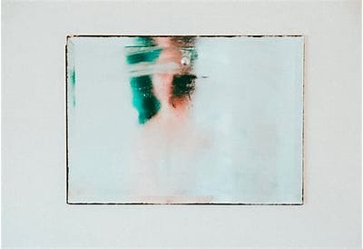

About 3,200,000,000 results (0.80 seconds)
- www.brooklynreclamation.com
- how-to-prevent-shower-mirror-fogging
Here are some of them:
- Soap: before showering, rub soap over your mirror so that the surface becomes translucent. ...
- Vinegar solution: make a solution of water and vinegar in the ratio of 1:1 and use it to wipe down your shower mirror. ...
- Shampoo: fold a paper towel and pour a small amount of shampoo (whatever brand you are using), and wipe it over the mirror; then take another clean paper towel and ...

www.brooklynreclamation.gov
how-to-prevent-shower-mirror-fogging
How Do You Prevent Your Shower Mirror From Fogging
The reason why cleaning products prevent mirrors from fogging is that they are surfactants, and thus avoid particles of steam from attaching on the surface of the glass. Vinegar solution: make a solution of water and vinegar in the ratio of 1:1 and use it to wipe down your shower mirror.
tooletries.com
blogs
news...
Stop Your Bathroom Mirror From Fogging Up – Tried and Tested!
You can buy heated shower mirrors that equalize the temperature, to prevent condensation. However, by far the easiest (and cheapest) method is to use a polycarbonate mirror with a hydrophilic layer applied, which will encourage the water to form a very fine film instead of forming droplets and fog.
www.instraight.com
best-lighted-makeup-mirror-review-guide
bathroom-mirrors ...
How to Keep Bathroom Mirror From Fogging Up ... - InStraight
How to Keep Bathroom Mirror From Fogging Up. My remedy to this dilemma is to allow outside air to flow into the bathroom. This helps the steam flow to the outside of the bathroom, keeping my mirror fog-free. But aside from this, what are the other ways to stop mirrors from steaming up in bathrooms? 1. Try a Cold Shower Out First


Videos

-
STOP Your Bathroom Mirror from Fogging Up!
-
Stop your bathroom mirror from Fogging up!
-
How to keep your bathroom mirror from fogging up - GREAT TIP!
-
How to Stop Your Mirror from Fogging Up -- Home Repair Tutor
-
How to Stop Your Mirrors from Fogging Up
info.glass.com
stop-shower-glass-fog
How to Keep Your Shower Glass From Fogging - Glass.com
Tips to Stop Shower Glass From Fogging. There are a few ways to go stopping shower glass fog. Some options are quite simple and don’t require any supplies at all. Others require items you probably already have at home. For the best performance, there are store-bought products that can be applied to the glass to help prevent fogging.
reliablereviewz.com
how-to-protect-shower-mirror-from-fogging-up
How to Protect Shower Mirror from Fogging Up
Ways to Prevent Shower Mirror from Fogging Up. 1. Shaving cream. This is a common product which is available at everyone’s home and is actually a great deterrent for foggy mirrors. The use would be 2 in 1 here when you will be having a morning session. Along with which, you can use the same commodity and defog your mirror.
housekeeping.wonderhowto.com
how-to
5-simple-ways-keep-your-bathroom-mirror ...
5 Simple Ways to Keep Your Bathroom Mirror from Fogging
Getting hot and steamy can be awesome, as illustrated in the 1997 smash hit Titanic. But having the bathroom mirrors fog up during a nice hot shower can be very annoying. Getting ready in the morning can already be rush, and having to wipe down your mirrors after your shower is time wasted. ..
theladinoproject.com
no-fog-shower-mirror
The Top 10 Best No Fog Shower Mirror And Buying Guide
We discovered the best no fog shower mirror of 2022 after hours of research and comparison of all models on the market. Take a look at our ranking below. Here Are Our Top 10 No Fog Shower Mirror At A Glance. Take a look at the following comparison chart of our top 10 best no fog shower mirror that will win your heart. #
myhomeneedz.com
stop-bath-mirror-from-fogging-up
Best Ways to Stop Your Bathroom Mirror from Fogging up
Enjoying a warm bath on a cold winter day is bliss but having to face a fogged-up bathroom mirror after this destroys the bliss. You can avoid the fog buildup on the mirror by using the bathroom ventilation, but this also devoid the bathroom of the heat and kills the purpose of a warm bath. … Best Ways to Stop Your Bathroom Mirror from Fogging up Read More »
www.creeklinehouse.com
how-to-keep-your-bathroom-mirror-fog
How to Keep Your Bathroom Mirror Fog-Free! - The Creek ...
Doesn’t everyone find it really annoying to try and use the bathroom mirror after a nice hot shower? Well, this amazing trick will keep your bathroom mirror fog free. It really works! Gather around, friends. Gather around. ... Stop your bathroom mirror from fogging! - Made From Pinterest says: May 9, 2014 at 8:12 pm ...
www.plumbingsupply.com
plumbing-projects-and-information
clearmirror-installation